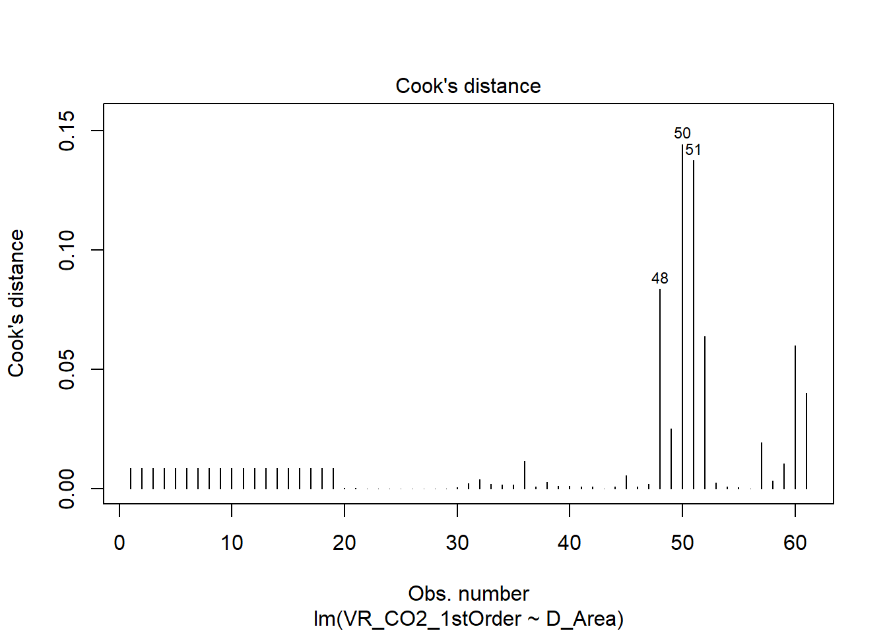
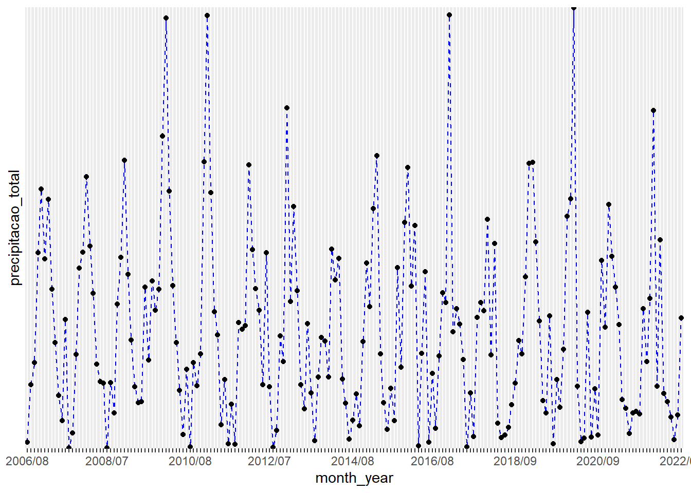
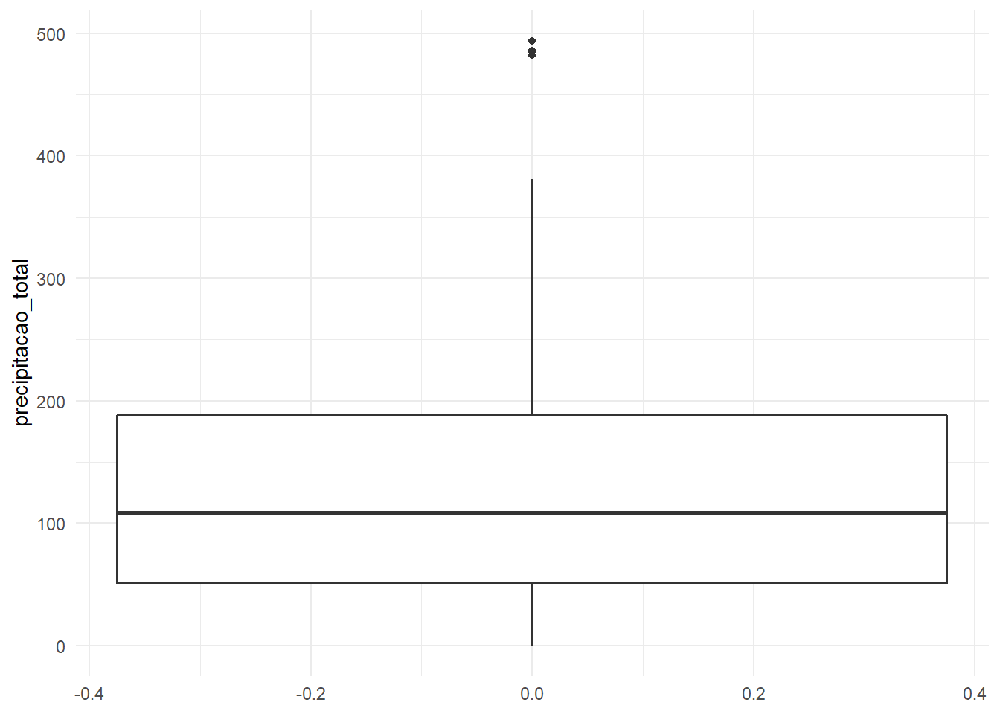

Aplicação
3.2.4 Pacote Climate
Para a análise exploratória de dados, serão utilizados os dados do pacote climate, que automatiza o download de dados meteorológicos e hidrológicos de repositórios públicos. Inicialmente, os dados serão carregados e também serão imotidos os valores NA coma função na.omit:
options(repos = list(CRAN="http://cran.rstudio.com/"))
options("install.lock"=FALSE)
install.packages("tidyverse")## Installing package into 'C:/Users/wesle/Documents/R/win-library/4.1'
## (as 'lib' is unspecified)## package 'tidyverse' successfully unpacked and MD5 sums checked
##
## The downloaded binary packages are in
## C:\Users\wesle\AppData\Local\Temp\Rtmpmk5BZ8\downloaded_packages#library(tidyverse)
# Carregar pacote climate
library(climate)## Warning: package 'climate' was built under R version 4.1.3library(rlang)## Warning: package 'rlang' was built under R version 4.1.3library(ggplot2)## Warning: package 'ggplot2' was built under R version 4.1.3# Carregar dados para análise
dados1 <- hydro_imgw_monthly(year=2010, coords= FALSE, col_names = "full")## [1] "https://danepubliczne.imgw.pl/data/dane_pomiarowo_obserwacyjne/dane_hydrologiczne/miesieczne/"## C:\Users\wesle\AppData\Local\Temp\Rtmpmk5BZ8\file1f745d8e7011## [1] "https://danepubliczne.imgw.pl/data/dane_pomiarowo_obserwacyjne/dane_hydrologiczne/miesieczne/mies_info.txt"## C:\Users\wesle\AppData\Local\Temp\Rtmpmk5BZ8\file1f74712932ce## [1] "https://danepubliczne.imgw.pl/data/dane_pomiarowo_obserwacyjne/dane_hydrologiczne/miesieczne/2010/mies_2010.zip"## C:\Users\wesle\AppData\Local\Temp\Rtmpmk5BZ8\file1f744e936c13dados2 <- na.omit(dados1)Para visualizar a contagem total de valores faltantes (NA) em cada coluna do dataset utilizaremos a função sapply. Por ela, é possível concluir que as colunas com dados faltantes são as de State, Temperature, e Flow.
sapply(dados1, function(x) sum(is.na(x)))## ID Station
## 0 0
## River_or_Lake Hydrologic year
## 0 0
## Hydrologic year ID Extreme ID [min - 1, mean - 2, Max - 3]
## 0 0
## State [cm] Flow [m3_s]
## 293 6101
## Temperature [C] Month
## 23789 0Após, é possível visualizar as primeiras seis linhas dos dados com a função head(). A partir disso, seguimos com a função summary que apresenta a sumarização dos dados. Ou seja, calcula, para cada uma das variáveis numéricas, as seguintes informações: valor mínimo (Min) e máximo (Max); o valor do 25º percentil, também conhecido como primeiro quartil (1st Qu); o valor do 75º quartil, também conhecido como terceiro quartil (3rs Qu); e, por fim, a média e a mediana.
# Visualizar as seis primeiras linhas do dataset
head(dados2)## ID Station River_or_Lake Hydrologic year Hydrologic year ID
## 11038 154150040 BARDY Parseta (44) 2010 1
## 11039 154150040 BARDY Parseta (44) 2010 1
## 11040 154150040 BARDY Parseta (44) 2010 1
## 11041 154150040 BARDY Parseta (44) 2010 2
## 11042 154150040 BARDY Parseta (44) 2010 2
## 11043 154150040 BARDY Parseta (44) 2010 2
## Extreme ID [min - 1, mean - 2, Max - 3] State [cm] Flow [m3_s]
## 11038 1 237 23.3
## 11039 2 260 28.4
## 11040 3 284 33.6
## 11041 1 249 24.0
## 11042 2 268 29.4
## 11043 3 294 36.0
## Temperature [C] Month
## 11038 3.8 11
## 11039 6.6 11
## 11040 7.8 11
## 11041 0.2 12
## 11042 3.1 12
## 11043 6.5 12View(dados2)
# Sumarizando os dados
summary(dados2)## ID Station River_or_Lake Hydrologic year
## Min. :149180100 Length:4831 Length:4831 Min. :2010
## 1st Qu.:150200080 Class :character Class :character 1st Qu.:2010
## Median :151210190 Mode :character Mode :character Median :2010
## Mean :151555380 Mean :2010
## 3rd Qu.:153140020 3rd Qu.:2010
## Max. :154210100 Max. :2010
## Hydrologic year ID Extreme ID [min - 1, mean - 2, Max - 3] State [cm]
## Min. : 1.000 Min. :1 Min. : 13
## 1st Qu.: 3.000 1st Qu.:1 1st Qu.: 122
## Median : 6.000 Median :2 Median : 189
## Mean : 6.395 Mean :2 Mean : 216
## 3rd Qu.: 9.000 3rd Qu.:3 3rd Qu.: 279
## Max. :12.000 Max. :3 Max. :1019
## Flow [m3_s] Temperature [C] Month
## Min. : 0.09 Min. : 0.000 Min. : 1.000
## 1st Qu.: 6.50 1st Qu.: 3.100 1st Qu.: 4.000
## Median : 19.30 Median : 8.600 Median : 7.000
## Mean : 145.69 Mean : 9.394 Mean : 6.626
## 3rd Qu.: 86.45 3rd Qu.:14.700 3rd Qu.:10.000
## Max. :6980.00 Max. :27.600 Max. :12.000Também é possível utilizar a função dim() para visualizar a dimensão do dataset.
#Dimensão do dataset
dim(dados2)## [1] 4831 10Portanto, o dataset possui 4831 linhas e 10 colunas.
Após visualizar a sumarização dos dados, podemos seguir para a visualização dos dados. Iremos criar um histograma dos valores de Vazão (m³/s) dos rios (Coluna River_or_Lake) do nosso dataset.
#Histograma da vazão
ggplot(data=dados2, aes(x=dados2$`Flow [m3_s]`)) +
geom_histogram(fill="blue", color="blue") +
ggtitle("Histograma de Vazão [m³/s]")## `stat_bin()` using `bins = 30`. Pick better value with `binwidth`. É possível visualizar que a grande maioria das vazões estão próximas ou são zero. Também é possível visualizar as vazões em um gráfico de dispersão, pareando qualquer combinação de variáveis:
É possível visualizar que a grande maioria das vazões estão próximas ou são zero. Também é possível visualizar as vazões em um gráfico de dispersão, pareando qualquer combinação de variáveis:
ggplot(data=dados2, aes(x=dados2$River_or_Lake, y=dados2$`Flow [m3_s]`)) +
geom_point() +
ggtitle("Distribuição de vazões por rio ou lago") +
theme(axis.text.x = element_text(angle = 90, vjust = 0.5, hjust=1)) Também é possível criar um Boxplot da vazão agrupada pelo rio ou lago correspondente:
Também é possível criar um Boxplot da vazão agrupada pelo rio ou lago correspondente:
ggplot(data=dados2, aes(x=dados2$River_or_Lake, y=dados2$`Flow [m3_s]`)) +
geom_boxplot(fill="steelblue") +
theme(axis.text.x = element_text(angle = 90, vjust = 0.5, hjust=1)) Por existirem rios e lagos com vazões muito próximas, alguns boxplots não são visualizados. Porém, nos outros é possível visualizar.
3.2.5 INMET
Para a aplicação, será utilizada a base de dados do Instituto Nacional de Meteorologia (INMET) de precipitação e temperatura na estação meterológica do Mirante de Santana em São Paulo, dos anos de 2014 a 2016.
No ano de 2014, São Paulo passou pela pior estiagem deste o ano de 1953. Entre o fim de 2014 e o outono de 2016, a cidade registrou o maior El Niño deste 1950. O El Niño, quando ocorre, causa um aquecimento anômalo das águas superficiais e sub-superficiais do Oceano Pacífico Equatorial, porém, não se comporta de forma constante em relação ao volume de chuvas. Uma das dúvidas do período era se o El niño poderia afetar o regime de chuvas e, assim, aumentar a precipitação em São Paulo.
Portanto, iremos aplicar a EDA para verificar essa relação entre o El niño e o volume de chuvas.
Para importar a base de dados em .csv, utiliza-se a função read.csv() e insere-se como argumento o diretório:
met<- read.csv2("Data/data1.csv")
met1 <- na.omit(met) # Omitindo os valores faltantes do conjunto de dadosÉ importante lembrar que read.csv() é utilizado quando os valores são separados por vírgula e decimais por ponto; e, read.csv2(), quando são separados por ponto e vírgula e os decimais por vírgula.
Para visualizar a tabela importada, basta executar a função View():
View(met1)Para iniciar a exploração dos dados, inicialmente será utilizada a função str() que exibe de forma compacta a estrutura da tabela importada.
str(met1)## 'data.frame': 34 obs. of 5 variables:
## $ Data : chr "2014/01/31" "2014/02/28" "2014/03/31" "2014/04/30" ...
## $ NUMDIAS : int 16 14 18 8 6 5 6 12 8 13 ...
## $ PRECIPITACAOTOTAL: num 223 188.8 212.6 77.2 50.2 ...
## $ TEMPERATURAMEDIA : int 25 25 23 21 19 18 18 20 21 21 ...
## $ ANO : int 2014 2014 2014 2014 2014 2014 2014 2014 2014 2014 ...
## - attr(*, "na.action")= 'omit' Named int [1:2] 7 26
## ..- attr(*, "names")= chr [1:2] "7" "26"Continuando, será utilizada a função ´summary()´ para apresentar o sumário de estatísticas descritivas (média, mediana, mínimo, máximo, 1º quartil, 3º quartil e valores faltantes (NA)).
summary(met1)## Data NUMDIAS PRECIPITACAOTOTAL TEMPERATURAMEDIA
## Length:34 Min. : 2.00 Min. : 2.40 Min. :15.00
## Class :character 1st Qu.: 8.00 1st Qu.: 50.35 1st Qu.:18.00
## Mode :character Median :12.00 Median :105.90 Median :21.00
## Mean :12.09 Mean :129.05 Mean :20.82
## 3rd Qu.:16.00 3rd Qu.:201.20 3rd Qu.:23.00
## Max. :22.00 Max. :327.80 Max. :25.00
## ANO
## Min. :2014
## 1st Qu.:2014
## Median :2015
## Mean :2015
## 3rd Qu.:2016
## Max. :2016Para continuar explorando os dados, realizou-se um gráfico de linhas a fim de analisar o comportamento da precipitação em relação às datas.
year <- met1$Data
precip <- met1$PRECIPITACAOTOTAL
df <- data.frame(precipitacao=precip, ano=year)
library(ggplot2)
ggplot(df,
aes(x = ano, y = precipitacao)) +
geom_line(linetype="dashed", color="blue", aes(group=1)) +
geom_point()
A distribuição de frequência da precipitação apresenta assimetria à direita (positiva):
ggplot(data = df,
aes(x = precip)) +
geom_histogram() ## `stat_bin()` using `bins = 30`. Pick better value with `binwidth`.
Após realizar a sumarização numérica de todos os dados, agora será focado nos dados de interesse: precipitação e ano. Primeiramente, será encontrada a média de precipitação por ano analisado, com um intervalo de confiança de 95% (escore-x da curva normal igual a 1,96).
#Média das precipitações por ano
library(dplyr) #instalando o pacote para utilizar o operador pipe %>%## Warning: package 'dplyr' was built under R version 4.1.3##
## Attaching package: 'dplyr'## The following objects are masked from 'package:stats':
##
## filter, lag## The following objects are masked from 'package:base':
##
## intersect, setdiff, setequal, uniontabela_stats <- met1 %>%
group_by(ANO) %>%
summarise(n_obs = n(), media = mean(PRECIPITACAOTOTAL), desvio_padrao = sd(PRECIPITACAOTOTAL)) %>%
mutate(erro = 1.96*desvio_padrao/sqrt(n_obs),
limite_superior = media + erro,
limite_inferior = media - erro)Com o objetivo de analisar a graficamente os valores de precipitação por ano, será utilizado um gráfico de barras com os erros padrões das amostras. Utiliza-se o erro padrão e não o desvio padrão porque, neste caso, estamos interessados na variabilidade das médias das amostras e não na variabilidade das observações dentro da amostra.
#Visualizando a tabela criada com os dados estatísticos
View(tabela_stats)
#Plotando os valores com seus respectivos erros
ggplot (data = tabela_stats, aes(x=ANO, y = media, fill=ANO)) +
geom_col() +
geom_errorbar(aes(ymin=limite_inferior, ymax=limite_superior)) +
ggtitle("Média das precipitações por ano") +
xlab("") +
ylab("") +
theme_bw() +
theme(legend.position = "none")
É possível analisar que houve um aumento do volume de chuvas no ano de 2015, se comparado com o ano de 2014. O valor médio de precipitação de 2016 é ligeiramente maior que a média de 2014. Porém, não é possível afirmar que os valores de precipitação se devem somente ao El niño, porque também existem diversos fatores, não analisados aqui, que podem influenciar no volume de chuvas.